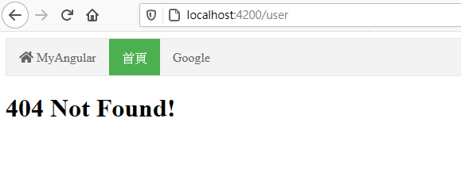

Angular學習筆記6 - Module 與路由
前面介紹了與 component 相關的內容之後
接下來將會介紹建構 angular 系統裡的重要角色 Module
Module 可以管理許多的 Component，並引入像是 Pipe、Directive、Service 等東西
也可以引入其他 Module 來使用相關的 Component、Pipe 或 Directive 等
之後還會介紹一種比較特別的 Module，路由
Module
前面其實有粗略的介紹過 Module 跟其裝飾器 NgModule
Module 本身管理著各種 Component、Pipe 跟 Service
來看看整個系列截至目前為止 AppModule 裡 NgModule 裝飾器的內容：
({ |
相較於最初介紹 NgModule，可以發現 declarations 多了上次使用的 HtmlTagPage 跟 IconDirective
事實上，任何要在頁面使用的 Component、Pipe、Directive 都要放入 declarations 裡
之前之所以沒有做這些操作，是因為 Angular CLI 會自動幫忙找最近的模組並自動引入
關於其他參數的內容，則可以回顧之前的Angular學習筆記3 - 專案結構、Module、Component
建立 Module
一直到剛剛都還是在介紹著整個 Angular 應用的中心 AppModule
但是實際上當功能逐漸複雜化時，會開始將一些獨立的功能分成子模組，等到需要時引用
接著將會再網站上新增 Navbar 模組
新增模組
一開始先使用指令新增模組：
ng g module navbar |
完成後，可以發現多了一個資料夾 navbar，裡面有模組 navbar.module.ts
然後就可以看到空無一物的模組 NavbarModule
import { NgModule } from '@angular/core'; |
撰寫 navbar 相關元件
為了完成 navbar
接著會參考 W3School 的 navbar 範例來設定 navbar 元件的樣式表跟樣板
考慮到 navbar 裡會有一個主體跟數個按鈕
因此會建立兩種元件 navbar 跟 nav-item
navbar 元件
新增 component navbar
ng g component navbar |
可以發現 NavbarModule 自動引入了 NavbarComponent
import { NgModule } from '@angular/core'; |
然後設定樣式表跟樣板
ul.navbar { |
<nav> |
ng-content
前面的程式碼中，可以看到 NavbarComponent 的樣板裡有一個 <ng-content></ng-content>
ng-content 可以將放在自訂標籤裡的元素都轉移進去
如果不加上這個，即使裡面放在多元素，都不會被顯示出來
舉例來說，我有這樣的 HTML 內容：
<app-navbar> |
那麼樣板的輸出會長這樣：
<nav> |
Component 樣式獨立
component 本身可以使用樣式表，這個樣式表只能自己使用，其他 component 無法引用
如果用過 F12 去查看 angular 的輸出，可以發現每個 component 裡的元素都會有一個屬性名稱作為標識：
而 component 輸出的樣式表會在每個指定條件後方加上對該屬性名稱的限制，進而達成樣式獨立
nav-item 元件
為了能夠更方便的產生 navbar 的按鈕，要再新增一個 component nav-item
ng g component navbar/nav-item |
使用後會在 navbar 資料夾中產生 nav-item 資料夾，並含有相關的 component 檔案
接著繼續照著 navbar 範例的子項目開始寫樣式表跟樣版內容：
export class NavItemComponent implements OnInit { |
.nav-item { |
<li class="nav-item"> |
上面的程式可以看到一些 @Input 的應用
等等在使用時會使用這些屬性來設定連接跟啟用
導出
寫好了 component 的部分，要能夠讓外面其他 component 可以使用，因此要進行導出
導出時只要加入 Module 裡的 exports 列表裡就可以了
({ |
如果在使用
ng g component時加上--export參數，Angular CLI 會自己幫你加到exports裡
導入
為了讓 AppComponent 可以使用這些自訂的 component，所以要將 NavbarModule 導入 AppModule
也就是在 imports 裡加入 NavbarModule
({ |
記得要先將
NavbarModule類別引入，再加到 imports 列表裡
使用自訂標籤
接著在 AppComponent 的樣板檔裡採用這些自訂標籤
<app-navbar> |
就可以看到成果了：
路由 (Routing)
SPA 的精隨在於它不用一直透過 request 取得頁面
因為換頁的操作都是在前端完成的
透過配置路由，可以決定哪些路徑要呈現哪些畫面
基本配置
由於一開始就建立附帶 routing 功能的專案，所以就省了建立 AppRoutingModule 的力氣了
直接來看目前 AppRoutingModule 的配置：
import { NgModule } from '@angular/core'; |
大致上就是一般的模組，重點就擺在 RouterModule 跟 Routes 身上
RouterModule
用來設定路由的模組，形式是固定的
imports 要放 RouterModule 導出的 Route 上
exports 則將 RouterModule 導出
RouterModule 有兩個基本函式 forRoot 跟 forChild 可以導出路由
forRoot 只會給 AppRoutingModule 使用而已
forChild 則會給其他的 RoutingModule 使用
Route
Route 包含路由的各種資訊，這邊只舉幾個常見的參數
path
路徑名稱component
對應的 componentredirectTo
可以重新導向路徑children
子路由，子路由裡的根路徑位置就是pathdata
當要使用 router 資訊來產生模板時，可以在data裡承載資料
router-outlet
經過路由處理後的 Component 會在 router-outlet 標籤內輸出
原理其實跟 ng-content 差不多
建立路由
一開始先建立一個 HomeComponent 作為首頁
接著在 AppRoutingModule 裡建立對應的 Route
const routes: Routes = [ |
根路徑的字串內容是空的，需要再加上 patchMatch: 'full' 才能正常使用
這邊將根目錄重新導向到 /home
而 /home 對應的 component 即 HomeComponent
配置 router-outlet
於 app.component.html 裡新增 router-outlet 來使路由的輸出結果顯示出來
<app-navbar> |
然後就可以看到輸出畫面了
子路由
並不是每個路由都一定要在 AppRoutingModule 管理才行
實際上針對不同的模組，可以管理自己的路由
這邊就先建立一個含路由的 UserModule
ng g module user --routing |
建立好之後看一下 user-routing.module.ts 的內容
import { NgModule } from '@angular/core'; |
和 AppRoutingModule 差不多，就是 forRoot 的部份變成了 forChild 而已
接著新增屬於 UserModule 的頁面 UserComponent後，將 /user 導向 UserComponent
const routes: Routes = [ |
然後在 AppModule 導入 UserModule
({ |
就可以前往 /user 查看結果了：
萬用字元路由
Route 裡的 path 如果設定內容為 ** 的字串
則可以匹配所有路徑
接下來將會透過建立 404 錯誤頁面來進行範例
萬用字元請務必擺在最下面
放在前面會使得判斷時直接導向萬用字元的路徑，而後面的路徑則不會被判斷到
要多注意萬用字元的位置，以避免某些路徑被吃掉的問題
建立 404 錯誤頁面
首先先建立好 error404.component.ts
由於只是一個簡單的錯誤畫面，所以就不建立測試，樣板和樣式也都改成內置
ng g component error404 -s -t --skip-tests |
接著寫好樣板內容，並去除掉用不到的部份
import { Component } from '@angular/core'; |
然後新增到 AppRoutingModule 的 routers裡
const routes: Routes = [ |
接著隨便打個不存在的路徑，就可以看到 404 Not Found! 了
路由順序問題
在萬用字元路由的條目中，有說到萬用字元的位置問題
其實 module 的引用順序也會影響路由判斷的順序
像是前面的 UserModule，我其實是刻意把它擺在 AppRoutingModule 的上方
越先引入的越先被判斷到，因此 AppRoutingModule 務必要再最下方
接續剛剛的 404 錯誤頁面，如果這次將 UserModule 放在 AppRoutingModule 下方，那會發生這樣的狀況

可以發現到，原本可以正常導向的 /user 卻被導向到萬用字元的路徑上了
這是因為 AppRoutingModule 先被判斷的關係，而萬用字元正好就在 AppRoutingModule 的底部
因此在到達 UserModule 裡的 UserRoutingModule 前，就會因為先判斷到 AppRoutingModule 的萬用字元而被導向過去
也就是說，AppRoutingModule 後面如果再多塞幾個路由，實際上是毫無意義的，因為根本到達不了
路由連接
除了導向，還可以透過官方提供的 directive 來取得路由路徑或是定位 navbar 上的項目
也就是 routerLink 跟 routerLinkActive
比起用說明的，這個直接套用到 navbar 上比較快
由於現有的 nav-item 架構不適合使用 routerLink，這邊需要將 nav-item小改一下
-
NavItemComponent裡的 Input 變數都清除 -
樣板修改
nav-item.component.html <li class="nav-item">
<ng-content></ng-content>
</li> -
將樣式表
nav-item.component.css的內容移到style.css -
修改
app.component.htmlapp.component.html <app-navbar>
<app-nav-item>
<a href="/">
<span appIcon="home"></span>
MyAngular
</a>
</app-nav-item>
<app-nav-item>
<a href="/home">
首頁
</a>
</app-nav-item>
<app-nav-item>
<a href="/user">
使用者
</a>
</app-nav-item>
</app-navbar>
<router-outlet></router-outlet>
然後套用 routerLink 跟 routerLinkActive
<app-navbar> |
執行結果：
| /home | /user |
|---|---|
可以發現，現在上面的 tab 會根據你的頁面路徑來提示你所在的頁面
實際上 routerLinkActive 會在你指定的 routerLink 路徑符合時給予所在元素指定的 CSS class
如果有仔細觀察看這次換頁的的畫面，也可以發現，跟上一次比起來，這次的頁面切換非常順利
這正是 SPA，不須在換頁時發送 request，在同一個頁面就可以透過 javascript 進行換頁行為
巢狀路由
在一開始的 Route 介紹有說到 children 參數
children 本身可以接受更多的 Route，當前面的路徑符合父 Route 時，會進入 children 搜尋符合的路徑，並套用父 Route 的 Component
這邊也舉個例子：
首先建立兩個 component：UserIndexComponent、UserInfoComponent
然後修改 UserComponent 的樣板
<p>user works!</p> |
接著在 UserRoutingModule 加入巢狀路由
const routes: Routes = [ |
最後看一下結果：
| /user | /user/info |
|---|---|
從上面的圖可以看到，內容被嵌到 UserComponent 樣板裡的 router-outlet 了
由於在父路由有指定 component，因此在到達子路由前就會先上一層 UserComponent
另外，你也可以發現上面的 tab 還是亮著的，那邊不是指定 /user 嗎？
由於 Angular 處理路由時會把部份匹配的路由都設定為 active，因此 /user 實際上也是處於 active 的狀態
即使路由是在外面被指定，依然會觸發：
const routes: Routes = [ |
Hasg Tag
將路徑擺在網址的 Hash Tag 後方
在 AppRoutingModule 中設定 useHash 即可：
({ |
結語
這次的內容相較之前又更長一些
在介紹 Module 時也順便介紹了路由
路由是 Angular 中非常核心的功能
SPA 的實現就是靠前端的路由在運作的
只透過前端換頁，達到較為流暢操作操作環境
一開始是想要自己設計 Navbar 樣式，但是考慮到自己的設計能力很差，所以直接套用 W3School 的範例比較快
中間講到 routerLink 時才發現自己設計的架構不好使用，所以才對 nav-item 進行修改
目前已經講了許多 Angular 的各種類別，這些都可以在官方網站找到更詳細的解說
如果去翻官方網站的說明文件，可以發現現在講的東西都還沒過一半
Angular 真的還有好多東西可以講，不過因為我沒有繼續深入，所以沒辦法再講更多東西了
因為到目前為止的每個條目都不是寫得特別詳細，如果有其他額外的問題，可以到官方文件上尋找相關條目
如果文章裡有什麼錯誤的話，可以透過文章下面的 gitalk 回報給我
參考
更新
- 2021-04-28
- 參考條目：
- 補上項目符號
- 參考條目：